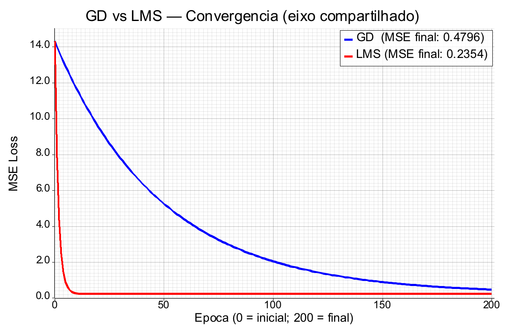

Dois otimizadores para o mesmo modelo e a mesma loss (MSE), num problema 2D. Batch Gradient Descent (gradiente sobre todos os N, 1 passo/época) vs LMS / Widrow-Hoff (atualiza por exemplo, N passos/época). Rust puro, sem libs de ML.
amostras sintéticas, y=3x1−2x2+1+ruído
passos de gradiente (GD vs LMS)
MSE mínimo teórico (σ² do ruído)
L = (1/N)·Σ(ŷ−y)², ŷ = wᵀx + b
∂L/∂w = (2/N)·Σ(ŷ−y)·x
∂L/∂b = (2/N)·Σ(ŷ−y)O fator 2 é absorvido no learning rate.
GD : w ← w − α·(1/N)·Σ(ŷ−y)·x (α=0.01)
LMS: w ← w + η·(y−ŷ)·x (η=0.001)
↑ por exemplo, online200 épocas: GD dá 200 passos; LMS dá 200×300 = 60.000.

| (seed=42) | GD | LMS | Verd./Mín. |
|---|---|---|---|
| MSE final | 0.480 | 0.235 | 0.250 |
| w[0] | 2.637 | 2.966 | 3.000 |
| w[1] | −1.669 | −2.007 | −2.000 |
| bias | 0.825 | 0.986 | 1.000 |
Tabela: seed=42 (ilustração; GD não converge de propósito, α=0.01). Oficial multi-seed (10 seeds): LMS 0.252±0.004 vs GD 0.502±0.012 — gap ~20× o std; LMS no piso σ²=0.25.
O eixo central: gradiente exato com poucos passos (GD) vs muitos passos ruidosos (LMS) — mesmo custo O(Nd) por época, estratégias opostas. A escolha do learning rate é crítica e independente para cada um (robusto no multi-seed: gap ≫ std).